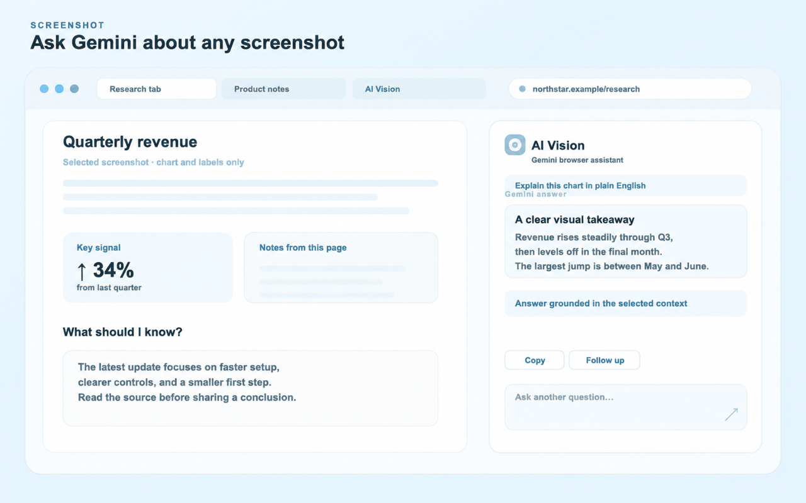

Add to Chrome
Install AI Vision from the Chrome Web Store.
AI Vision uses Gemini to help you understand screenshots and webpages—instantly. Ask a clear question, get a useful answer, and move on.

Use this tiny example to see the kind of question AI Vision is built for.
AI Vision keeps the setup small and the useful path close at hand.
Install AI Vision from the Chrome Web Store.
Create a key in Google AI Studio and keep it in your local extension settings.
Open Settings, paste the key, save it, and ask your first screenshot question.
Use plain-language workflows for the things you already do in Chrome.
Turn a chart, error, or image into a clear explanation with the screenshot guide.
Get the key points without leaving the page using the webpage summary guide.
Pull together sources, prices, or research notes with the tab comparison guide.
AI Vision sends the context needed for your request directly to Gemini. The extension stores your key locally and has no developer analytics, advertising, or proxy server.
Read the full privacy notice →Yes. Create one in Google AI Studio, paste it into Settings, and save it. Google controls model access and pricing.
Ask about a selected screenshot, the readable content on this page, or supported pages across up to 20 tabs in one Chrome window.
No. Chrome internal pages, the Chrome Web Store, and other restricted pages cannot be read.
Optional Browser tasks stay inside the selected Chrome tab or window, ask for approval before consequential actions, and cannot control other apps.
Install AI Vision, add your Gemini key, and make the next tab easier to understand.